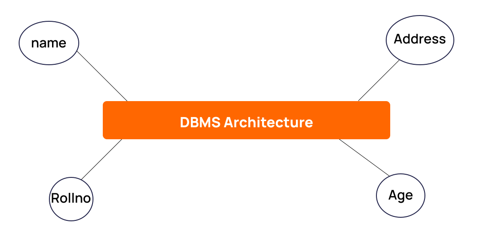

Entity Relational Model
ER model stands for an Entity-Relationship model. It is a high-level data model. This model is used to define the data elements and relationship for a specified system.
It develops a conceptual design for the database. It also develops a very simple and easy to design view of data.
In ER modeling, the database structure is portrayed as a diagram called an entity-relationship diagram.
For example, Suppose we design a school database. In this database, the student will be an entity with attributes like address, name, id, age, etc. The address can be another entity with attributes like city, street name, pin code, etc and there will be a relationship between them.
